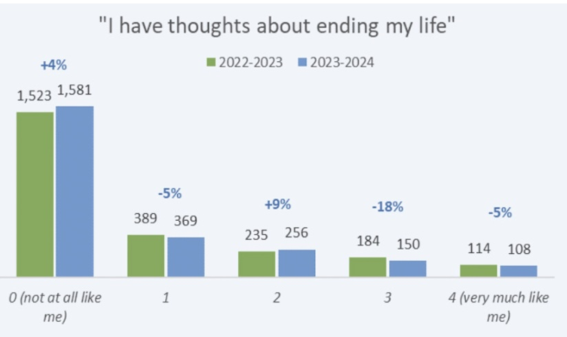

60%
College students meeting the criteria for at least one mental-health problem
2020–21 school year, cited by the American Psychological Association (Abrams)
Research & Context
Mental health is more openly discussed than ever, and yet the crisis on college campuses persists, including here at the University of Maryland. This page lays out the evidence behind a proposal to redesign the plaza outside the Computer Science Instructional Center (CSI) as a greenspace built to support student mental health.
60%
2020–21 school year, cited by the American Psychological Association (Abrams)
10.5%
UMD Counseling Center, Annual Report 2023–24
2,000+
UMD Counseling Center, Annual Report 2023–24
Mental Health on Campus
In recent years, mental health has become more understood and openly discussed in public life. Many recognize the severe impacts it can have on an individual, and how vital awareness and support are in combatting them. Yet the crisis remains: an article in the American Psychological Association cites a study finding that during the 2020–2021 school year, more than 60% of college students met the criteria for at least one mental health problem (Abrams). The numbers are staggering, and they need a response.
The pattern is visible at the University of Maryland, too. UMD's Counseling Center 2023–24 Annual Report, drawing on more than 2,000 in-take assessments, found that 10.5% of students were rated high-risk for suicidality, 4.0% had considered it in the past two weeks, and 7.9% had attempted it ("Annual Report 2023–24"). And these figures are restricted to suicidality alone; mental-health distress also takes the form of disorders, depression, and chronic anxiety that a single measure cannot capture.
Existing services, counseling centers, workshops, and destressing sessions, do important work meeting students one at a time. But what if the campus environment itself, the space students live in every day, could do part of the work?

The Nature Deficit
Research on academic greenspace points the other direction. Where green campus spaces exist, even modestly, students report a "feeling of detachment from daily stress," "positive emotions like happiness and energy," and a stronger trigger for "social belonging" (Foellmer et al.). The deficit, in other words, is reversible.
Greenspace gives students a psychological "step away" from the academic grind, a passive but powerful reset between classes (Foellmer et al.).
Time in green campus spaces is linked to positive emotions like happiness and energy, the building blocks of resilience between hard classes (Foellmer et al.).
Outdoor seating triggers informal social encounters, the small, unplanned conversations that knit a campus into a community (Foellmer et al.).
Data & Reports
Abrams, Zara. American Psychological Association, Oct. 2022.
An APA feature on the post-pandemic surge in college mental-health distress, the source of the 60%-of-students figure that anchors much of this page (Abrams).
Read the full article →Foellmer, Kistemann & Anthonj. Wellbeing, Space and Society, Vol. 2, 2021.
Finds that academic greenspace promotes detachment from daily stress, positive emotions like happiness and energy, and a stronger sense of social belonging (Foellmer et al.).
Read the study →Counseling Center, University of Maryland, 2024.
Reports on more than 2,000 in-take assessments at UMD: 10.5% of students rated high-risk for suicidality, 4.0% with recent ideation, and 7.9% with a past attempt.
View the data →From Issue to Action
Existing services meet students one at a time. The campus environment, by contrast, reaches every student who walks through it, every day, without an appointment. The plaza outside the Computer Science Instructional Center (CSI) on the UMD campus currently lacks adequate seating and greenery: the inverse of the conditions the research describes as supportive.
We propose redesigning that space as a greenspace built to foster social interaction, unity, and improved mental health for the students who pass through it every day.
See the Action Plan →Media Repository
A growing library of interesting pieces I encountered while researching this project. Click any card for a short summary and link.